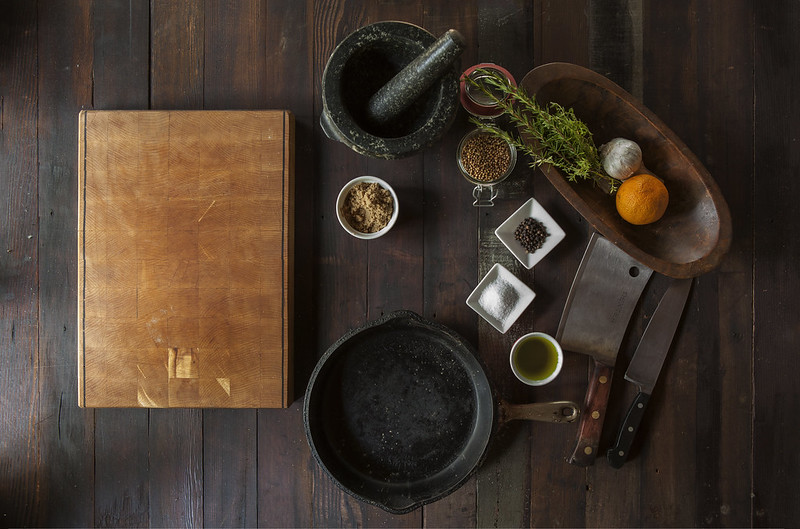

Tasting culture - a guide to Irish delicacies

Nothing brings divided people together better than a good meal
Irish soda bread
No, this does not contain the type of soda that you can drink. The soda in its name stands for baking soda.

This is because that's the agent it uses to rise instead of yeast, which is all made possible thanks to the acid in its recipe,
commonly being buttermilk. In fact, that's already half of what you need to make this bread! All you're missing is flour and salt,
but most people nowadays choose to add more than the bare minimum, adding ingredients such as margarine, sugar, eggs and raisins.
Though it may look like any ordinary loaf of bread, it has a fascinating history. It was first introduced to the world in the early 19th
century, but it didn't quite make its grand appearance until 1845, not-so-coincidentally being the start of the Great Famine. Since it didn't
require many resources nor time to make, it easily became a staple in every home during the Famines, and was made to stay even after it
ended in 1852. Today, it is commonly enjoyed the days leading up to and during St. Patrick's day. It doesn't feel right without it!
Irish stew
Of course, you can't have a loaf of bread without having a nice stew to go with it. Or... well, the bread would be the side dish, but you get my point.

As with any good culture, we also have our own stew. Mutton or lamb, potatoes, onions, and carrots if you're daring, all go into the
pot of broth for a couple of hours. Some say what differentiates the Irish stew from the ordinary beef stew is, simply put, the beef.
At the same time, some say an Irish stew with beef is still an Irish stew. Confusing times we live in.
This dish also got popularized due to its few ingredients, believed to have originated around the 17th or 18th century as a cheap and
low-effort meal shepherds and rural farmers could depend on for their longest workdays. A resource readily available during this time
was goat meat, which is why it's included in one of the theories as to how the stew's origins began. There is really no way for us to
know if the Irish stew had its start with goat meat, and was later switched to mutton and lamb, but one theory is better than nothing.
Honorable mention: the Yellowman (yellaman) sweet.